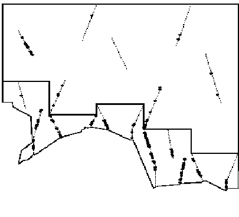
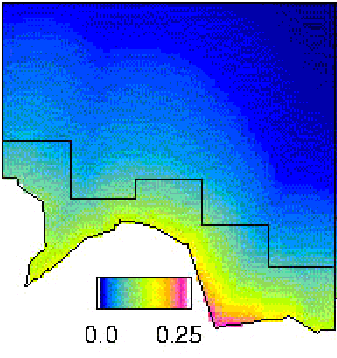

Analysis of stratified data
The Data
The Distance project Stratify exercise.zip contains data from a stratified survey of Antarctic minke whales. The data are “exact” insofar as they are calculated directly from the estimates of radial distance and angle recorded by the observers. While angle boards and reticle binoculars were used for estimation of angles and distances when possible, the transitory nature of cues (usually blows) and the pitch and roll of the vessel, among other things, leads to in errors in estimating angles and distances. Angular errors are typically of the order of a degree or two; the coefficient of variation of distance estimation errors is typically of the order of 10%.
The two strata were surveyed by different vessels at the same time. Because the whales tend to be found in high densities against the ice edge, where they feed, densities in southern strata are typically higher than those in northern strata. In fact this is the primary reason for using a stratified survey design. It is also the reason for covering the southern strata more intensely; in this survey the transect length per unit area in the southern stratum, is more than 2.5 times that in the northern stratum.
Here are pictures of the sort of design used and a typical density gradient. The irregular bottom border is the ice-edge; the “steps” define the boundary between southern and northern strata; dotted lines are transects; solid dots are detections.
 
Analysis Exercises
Open the project from its archive Stratify exercise.zip. The project contains one analysis specification, called Full geog stratification. This is a fully stratified analysis of the data. Seven equal perpendicular distance intervals, truncation at 1.5 nautical miles (nm), and a hazard rate detection function form with no adjustment terms are used to estimate the detection function. As the focus of these exercises is stratification, do not investigate other perpendicular distance intervals and detection function forms; the given models are adequate. Use the Analysis browser to familiarise yourself with the details of this analysis specification.
- Having done that, run the analysis Full geog stratification. Look at the results, and note the AIC statistics from each detection function fit.
- To stratify \(f(0)\) or not: Create a new analysis identical to Full geog stratification by clicking the New Analysis icon in the Analysis tab of the Project browser after selecting the existing analysis. The new analysis will be a copy of the existing one.
- Create a new model definition for this new analysis by going to the Inputs tab and highlighting the “haz rate+no adj full strat” model, then clicking the New tab. This will copy the existing model definition – modify the new model definition so that f(0) is to be estimated from the pooled strata (click the Detection function x Global cell of the table on the Estimate tab of the Model Definition Properties window you get after clicking New). Give this new model definition the name Pooled detection fn and then click OK.
- Run the new analysis and look at the output. By comparing the AIC from this analysis with the sum of the AICs from the analysis Full geog stratification, and considering the fits of each detection function, decide whether or not to pool strata for estimation of f(0).
- Create an analysis without any stratification (No stratification) and estimate density using it.
- Why is the density estimate so much higher than those from Full geog stratification and Pooled detection fn above?